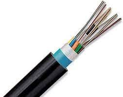

Cable de fibra óptica OM3 Multimodo 12 hilos Datatronix (FC-LT-31-12)
• Fibra Multimodo OM3 50/125µm optimizada para láser.
• Construcción Loose Tube con gel bloqueante.
• 12 Hilos identificados por código de colores estándar.
• Chaqueta LSZH (Low Smoke Zero Halogen).
• Refuerzo dieléctrico anti-roedores.
$ 2.95
+ IGV / metro
Disponible en stock

Ampliar
Galería de Imágenes


Características Detalladas
Rendimiento y Construcción
El modelo FC-LT-31-12 ofrece un núcleo de 50/125µm (OM3) ideal para enlaces troncales de alta velocidad (10Gbps hasta 300m). Su construcción Loose Tube con gel tixotrópico protege las fibras contra la humedad.
Especificaciones Físicas
- Diámetro externo: 6.5 ± 0.3 mm
- Peso aprox: 40 kg/km
- Tracción (Inst): 1000 N
- Rango Temp: -20°C a +60°C
Aplicaciones
Recomendado para interconexión de edificios (Campus Backbone), tendidos en ductos subterráneos y ambientes que requieren normativa LSZH.
Preguntas Frecuentes sobre el Producto
¿Qué tecnología utiliza este cable?
Es un cable de fibra óptica marca Datatronix, modelo OM3 Multimodo de 12 hilos con tecnología Loose Tube (Tubo Holgado), relleno de gel para protección contra humedad.
¿Es resistente a roedores y tracción?
Sí. Cuenta con miembros de refuerzo dieléctricos de e-glass, que proporcionan excelente resistencia a los roedores, a la tracción (hasta 1000 N en instalación) y al aplastamiento.
¿Qué tipo de chaqueta tiene y dónde se puede instalar?
Posee una chaqueta exterior LSZH (Low Smoke Zero Halogen) retardante a la llama. Está diseñado para instalaciones tanto interiores como exteriores (en ductos) e interconexiones de edificios en campus.
Resumen de Especificaciones Técnicas
- Tipo: Multimodo OM3 (50/125 µm)
- Diámetro: 6.5 ± 0.3 mm
- Radio de Curvatura: 20x diámetro (instalación)
- Temperatura: -20 °C a +60 °C